1 Software Prerequisites
1.1 Software required
You will need to install the following software on your computer: Visual Studio Code (VSCode), a free and open-source code editor. You’ll have to install the following extensions:
- 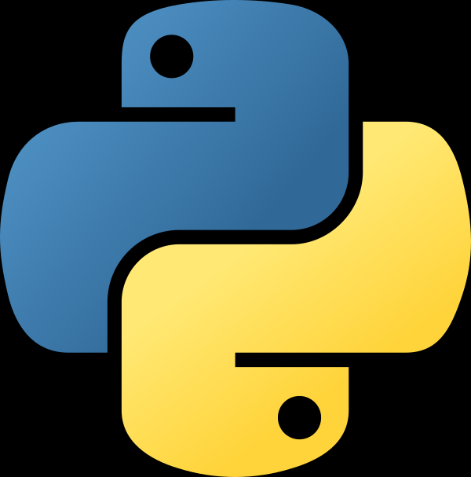 Python extension to have everything you need to work with Python.
- Live Share to enable collaborative editing.
- Continue.dev to have the AI Code Assistant we will use as example in this course.
1.2 AI Assistant, getting API Key.
For the practical work, you’ll need to get API Keys from Mistral.ai’s “La Plateforme” (it’s completely free). You will need a valid cell phone number for the registration to work. Contact me if this is a problem.
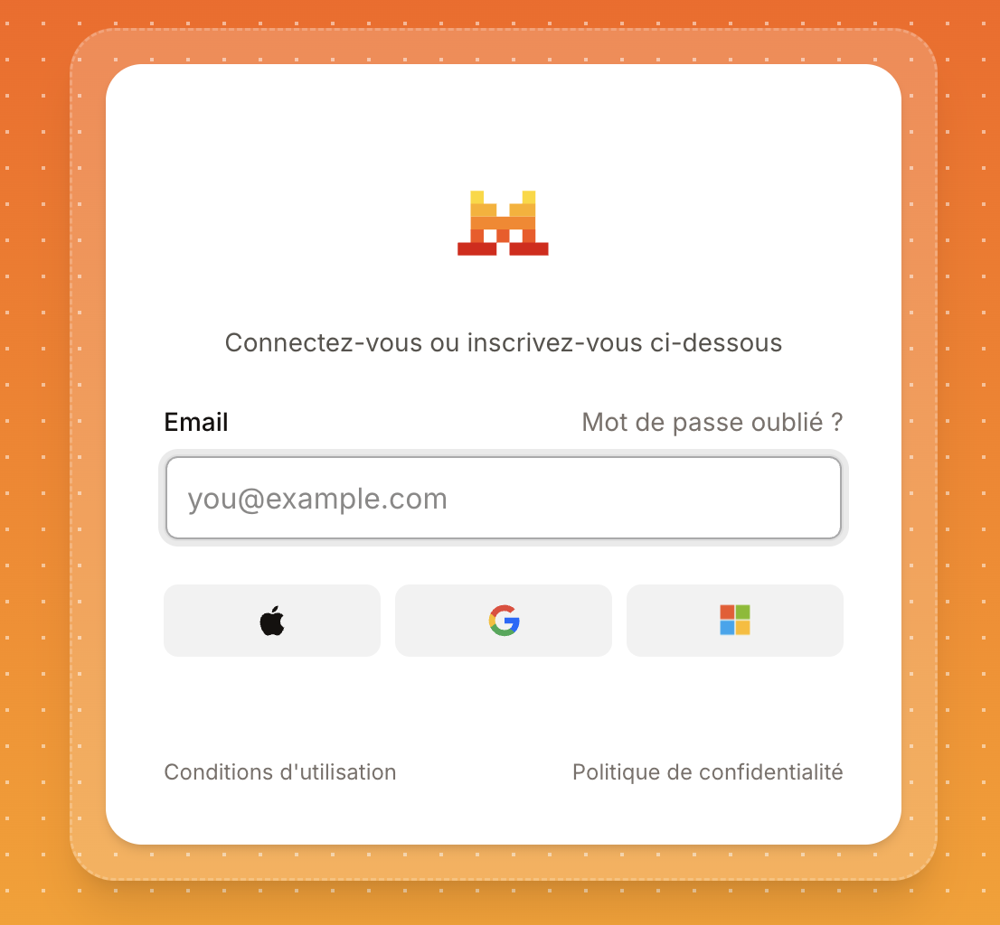
The first time, you’ll have to create an account. Then, you’ll be able to get your API Key.
Once there, Click on “API Keys” tab.
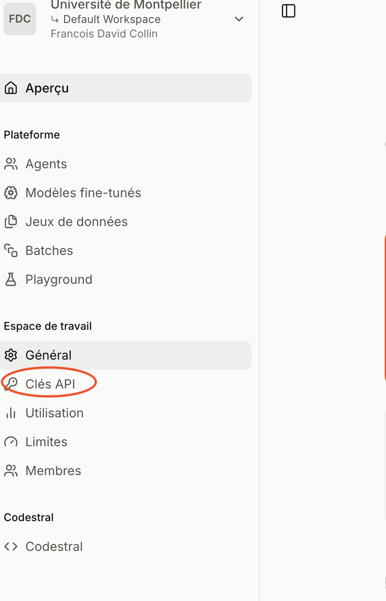
Click on “Choose a plan”.
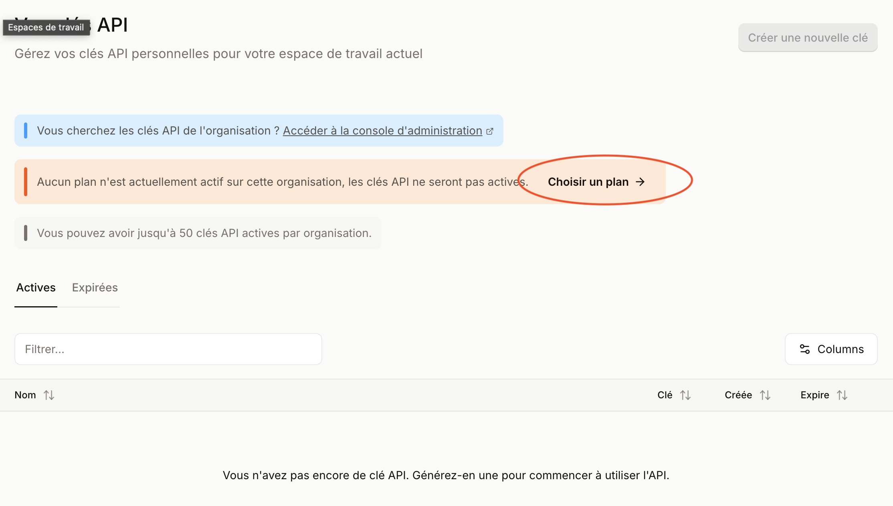
Choose “Experiment” plan.
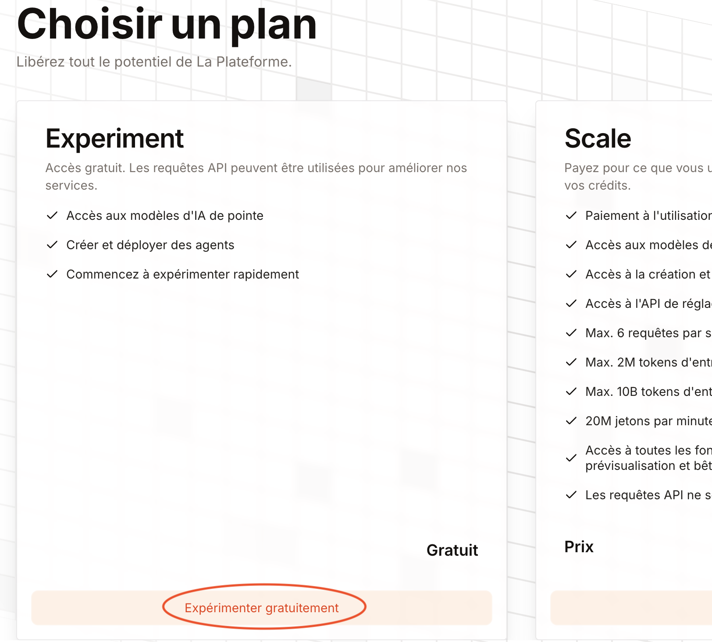
Accept the conditions.
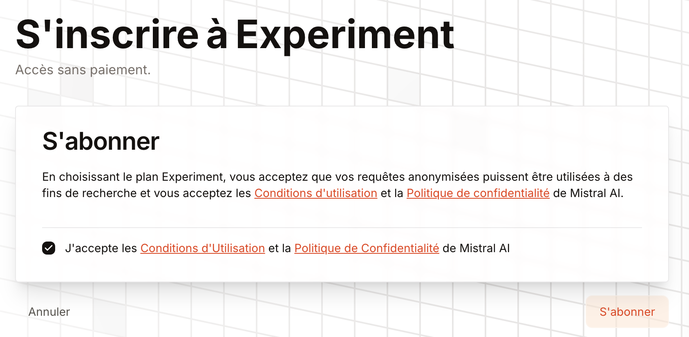
Give a phone number for the final check.
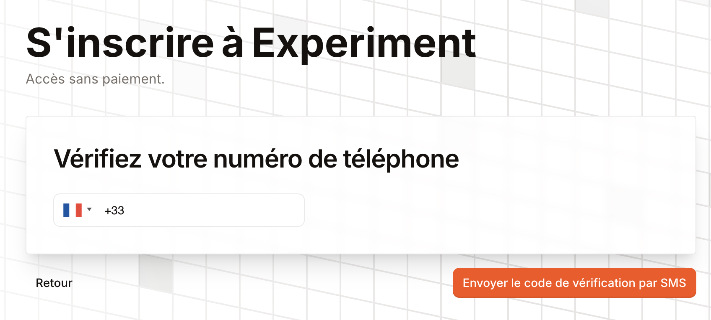
Confirm the code.
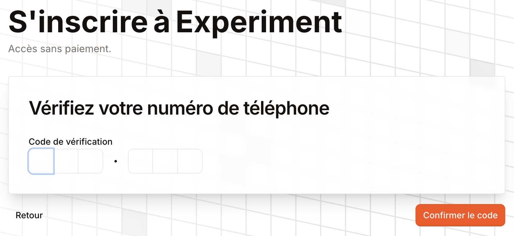
If successful, return on the “AI Keys” Tab and choose “Create a new key”
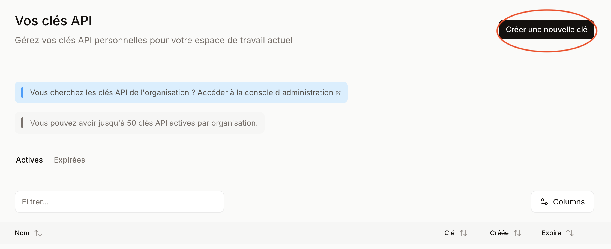
Choose a name and an expiration date for your key (could be never if not set).
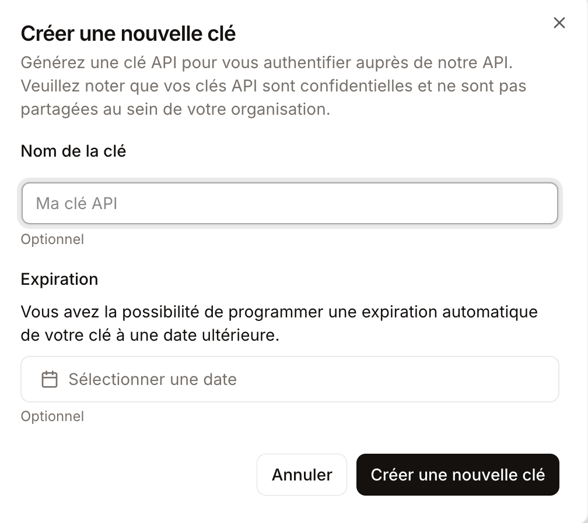
Copy the key and save it somewhere.
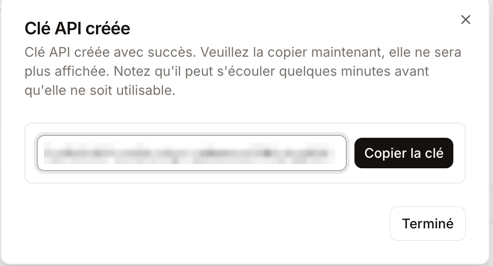
You may also create a specific key for Codestral model, which could be used for auto-completion role. Auto-completion role needs specifically tailored models for this task, and the models you can access with the “generic” mistral key aren’t.
1.3 VSCode setup
When you installed your continue vscode extension, it created a .continue folder in your home directory, which is ~/.continue on Linux and Mac, and %USERPROFILE%\.continue on Windows. Create a .env file there and put your mistral key in it, like this:
MISTRAL_API_KEY=your_key_hereOptionally if you got a codestral key put it too:
CODESTRAL_API_KEY=your_codestral_key_hereOpen/Create config.yaml file in the same folder and put this in it:
name: miashs/mistral
version: 1.0.0
schema: v1
models:
## Uncomment this block if you want to use Codestral for auto-completion, needs a specific key
# - name: Codestral
# provider: mistral
# model: codestral-2508
# apiBase: https://codestral.mistral.ai/v1
# apiKey: ${{ secrets.CODESTRAL_API_KEY }}
# roles:
# - autocomplete
# defaultCompletionOptions:
# contextLength: 256000
- name: Devstral
provider: mistral
model: devstral-medium-latest
apiKey: ${{ secrets.MISTRAL_API_KEY }}
roles:
- chat
- edit
- apply
defaultCompletionOptions:
contextLength: 131072
capabilities:
- tool_use
# You may choose mistral over devstral if you need image input
- name: Mistral
provider: mistral
model: mistral-medium-latest
apiKey: ${{ secrets.MISTRAL_API_KEY }}
roles:
- chat
- edit
- apply
defaultCompletionOptions:
contextLength: 131072
capabilities:
- tool_use
- image_input
- name: Codestral Embed
provider: mistral
model: codestral-embed
apiKey: ${{ secrets.MISTRAL_API_KEY }}
apiBase: https://api.mistral.ai/v1
roles:
- embed
context:
- provider: code
- provider: docs
params:
maxdepth: 5
- provider: diff
- provider: terminal
- provider: problems
- provider: codebase
params:
nRetrieve: 60
nFinal: 25
- provider: folder
params:
nRetrieve: 60
nFinal: 25
- provider: open
- provider: web
- provider: tree
- provider: clipboard
- provider: debugger
- provider: repo-map
- provider: os
- provider: search
- provider: urlCongratulations, you are now set for use of continue AI Code Assistant. You can open the chat panel either by clicking on the Continue in the right bottom status of vscode window or with Cmd + L (Mac) or Ctrl + L (Windows/Linux).
1.4 Collaborative editing
- In the discord channel, I’ll provide you a link to join a collaborative editing session. Don’t click on it, just copy it: 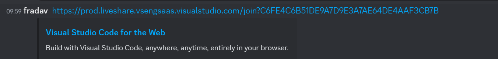
- Then open a new “blank” window in VSCode, which will be exclusively for collaborative session. 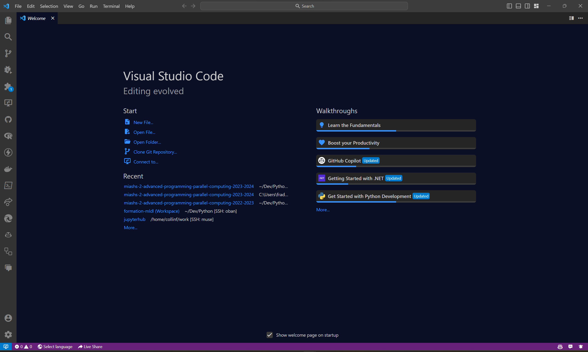
- Then, click on the “Live Share” button in the bottom left corner of the window 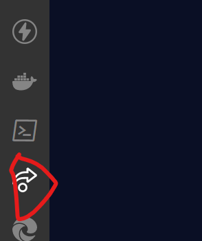
- Click on the “Join” button 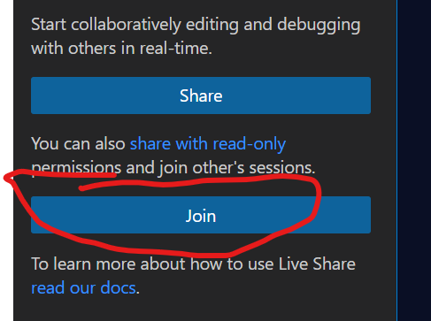
- Either choose anonymous or sign in with your github/microsoft account 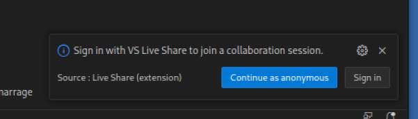
If you choose to sign in, you’ll have to authorize VSCode to access your github/microsoft account. If you choose anonymous, you’ll have to choose a username. Please choose a username that is easily identifiable as yours.
2 Python Environment Management
As 2025, the recommended way to manage python environments is to use uv, by far. It is a directory-env based, that is, it installs environment and packages in the current directory.
2.1 Installing uv
See uv installation for your platform.
2.2 Creating a new environment
To create a new environment, use the following command:
uv initThis will create a new environment within the current directory.
2.3 Adding packages
To add packages to your environment, use the following command:
uv add package_nameReplace package_name with the name of the package you want to install. This will install the package in your current environment.
2.4 running a script online with just a dependency
uv run --with dependency script.pyThis will execute the script.py file using just the specified dependency as the environment.
2.5 running script with a directory
uv run --directory dir_env script.pyThis will execute the script.py file using the specified directory as the working directory.